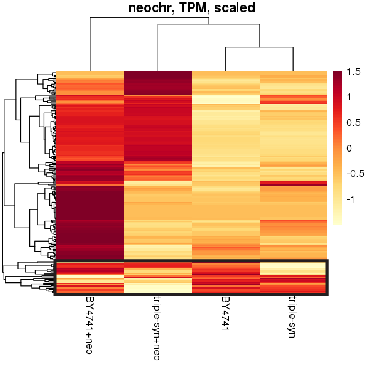

Sc2.0 genomiXploration
Daniel Schraivogel /
 @SchraivogelS
@SchraivogelS


How is tRNA expression affected by relocation to neochromosome?
Two challenges for quantifying tRNAs
- tRNAs are heavily modified ARMseq
- tRNAs have multiple genomic origins pre vs mature tRNAs

Quantification of tRNA sequence divergence
Problem 1 → ARMseq
Problem 2 → Clever quantification
ARMseq data analysis pipeline can do this, but can't directly compare multiple genomes


Problem 2 → Clever quantification
ARMseq + SalmonDoes it work?
Direct comparison to ARMseqExperimental Set up
We get more than just tRNAs
tRNA levels largely reproducible across strains
Multiple responses of tRNAs on neochr
As expected
Slightly surprising
Weird
21 differentially expressed tRNAs

Salmon and Wasabi: Rob Patro, COMBINE-Lab
Sleuth: Pachter lab